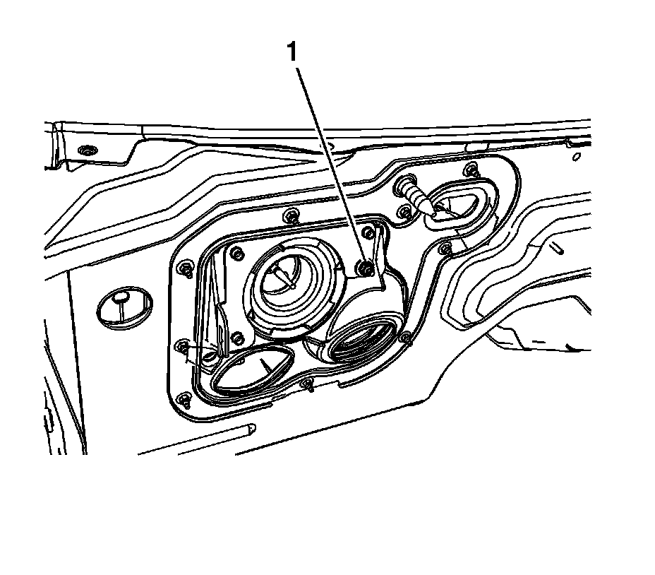
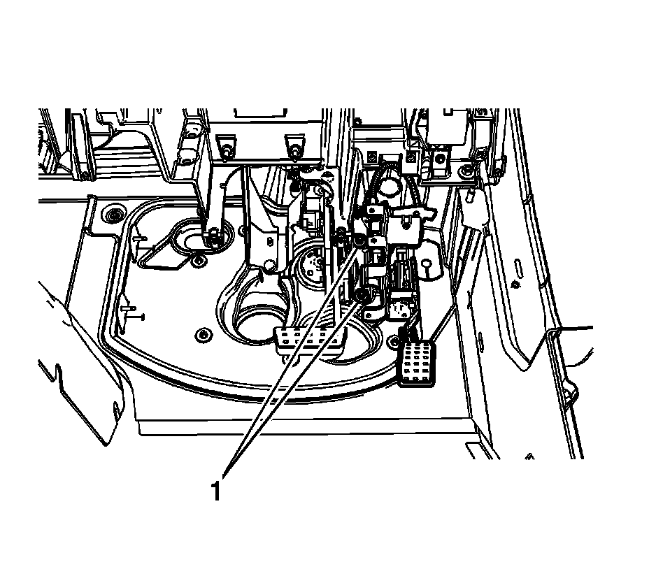
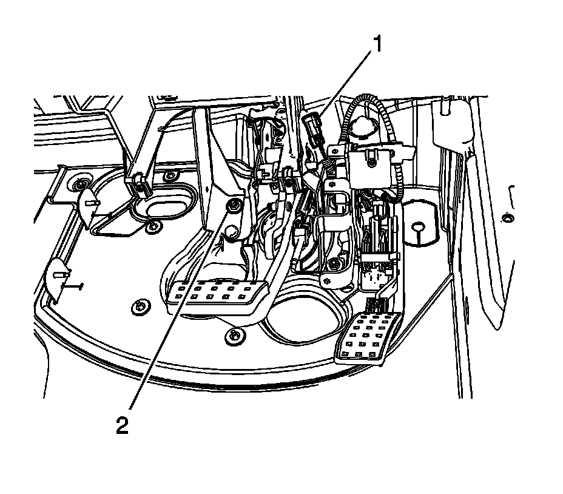
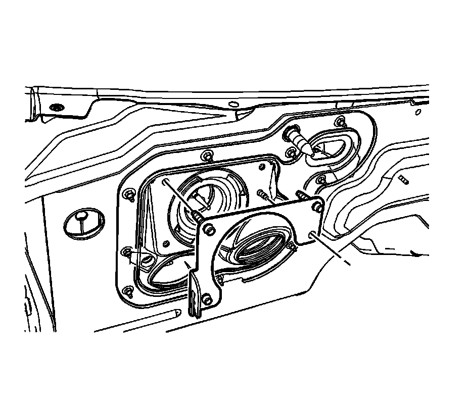
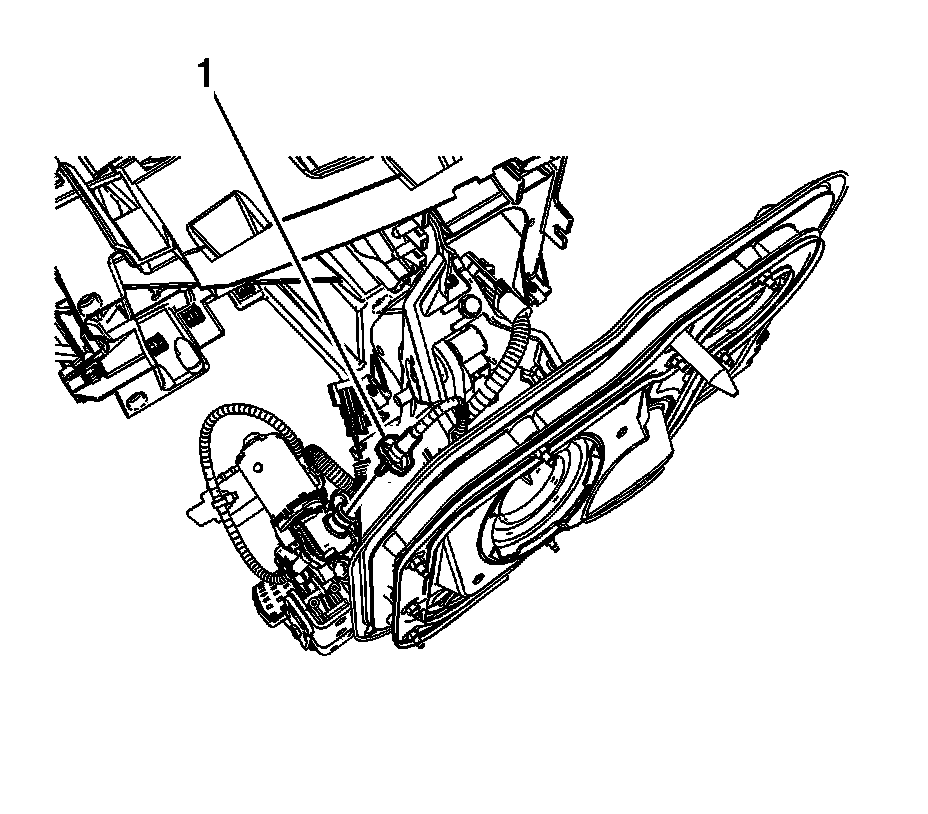
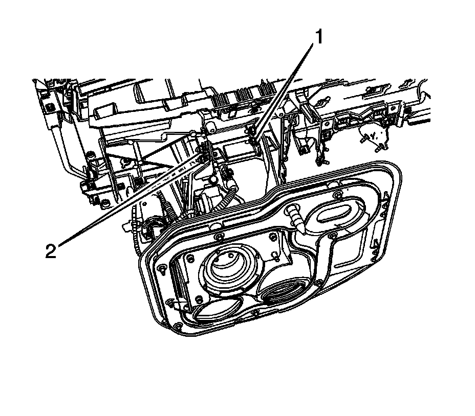
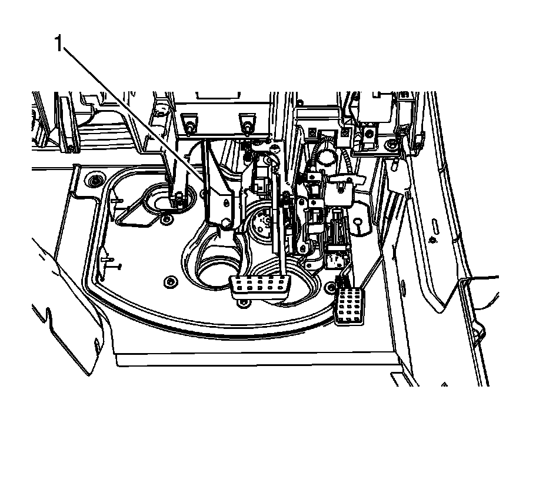
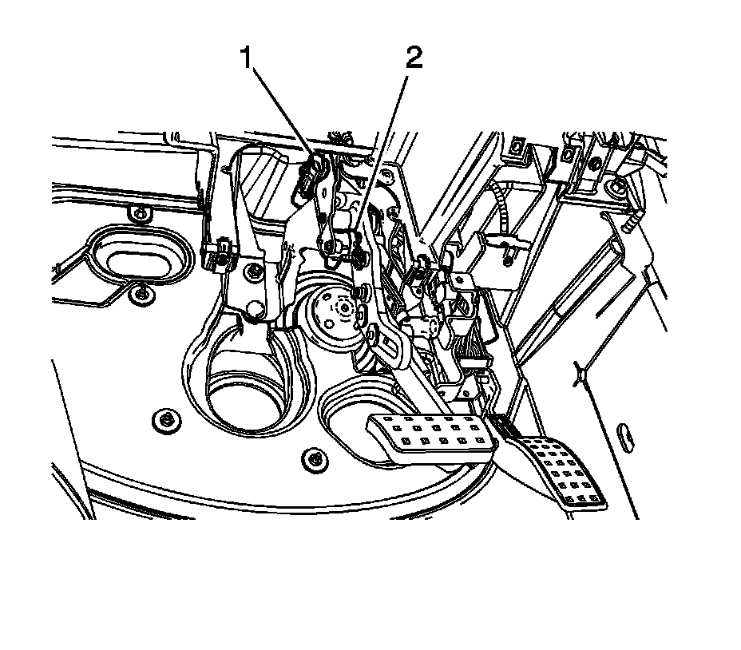
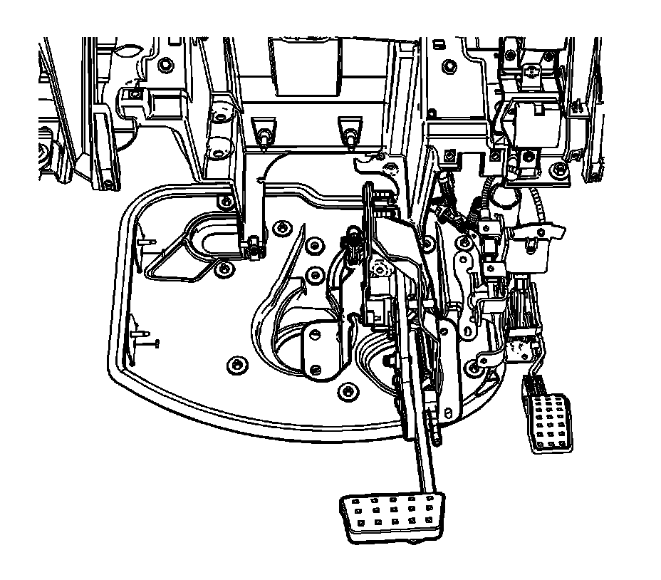

Brake Pedal Assembly Replacement (RHD)
Brake Pedal Assembly Replacement (RHD)
Removal Procedure

1. Remove the vacuum brake booster. Refer to Power Vacuum Brake Booster Replacement (LHD) (Power Vacuum Brake Booster Replacement (LHD))Power Vacuum Brake Booster Replacement (RHD) (Power Vacuum Brake Booster Replacement (RHD)) .
2. Remove the vacuum brake booster mounting plate nut (1).
3. Without disconnecting the steering column from the intermediate shaft, lower and support the steering column. Refer to Steering Column Replacement (Steering Column Replacement) .

4. Remove the 2 lower adjustable pedal assembly bracket nuts (1).

5. Carefully lower the accelerator pedal and motor assembly to access the connectors.
6. Disconnect the accelerator pedal linear position sensor electrical connector (1) and release the clip from the brake pedal bracket.
7. Remove the lower steering column support bracket nut (2).

8. Remove the vacuum brake booster mounting plate.

9. Carefully compress the brake pedal adjuster actuator cable collar (1) at the motor and pull the cable straight out.

10. Remove the 2 upper steering column support bracket nuts (1).
11. Remove the 2 upper brake pedal assembly nuts (2).

12. Remove the steering column support bracket (1).

13. Carefully lower the brake pedal assembly to access the electrical connectors.
14. Disconnect the brake pedal linear position sensor electrical connector (1).
15. Disconnect the brake pedal position sensor electrical connector (2).

16. Remove the adjustable brake pedal assembly.
Installation Procedure
Important: Ensure the adjustable brake pedal and the adjustable accelerator pedal are synchronized in the full forward, front of vehicle position.
1. Using a suitable tool, slowly rotate the exposed end of the adjustable brake pedal actuator cable until the brake pedal assembly in the full forward, front of vehicle position. Do not use excessive rotating force on the adjustable brake pedal actuator cable.
Do not exceed 0.5 N.m (4.43 lb ft) of rotating force.
2. Using a square drive tool on the adjustable pedal motor, carefully rotate the adjustable pedal motor until the accelerator pedal is in the full forward, front of vehicle position. Do not use excessive rotating force on the adjustable pedal motor.
Do not exceed 0.5 N.m (4.43 lb ft) of rotating force.
3. Install the adjustable brake pedal assembly.
4. Connect the brake pedal linear position sensor electrical connector (1).
5. Connect the brake pedal position sensor electrical connector (2).
6. Install the steering column support bracket (1).
7. Install the vacuum brake booster mounting plate.
Notice: Refer to Fastener Notice (Fastener Notice) .
8. Install the 2 upper steering column support bracket nuts (1).
Tighten the nuts to 25 N.m (18 lb ft).
9. Install the 2 upper brake pedal assembly nuts (2).
Tighten the nuts to 25 N.m (18 lb ft).
10. Install the brake pedal adjuster actuator cable (1) to the motor.
Ensure the adjustable brake pedal actuator cable engages the adjustable pedal motor drive fully and the collar is locked into place.
11. Connect the accelerator pedal linear position sensor electrical connector (1) and install the clip to the brake pedal bracket.
12. Position the accelerator pedal and motor assembly to the vacuum brake booster bracket studs.
13. Install the lower steering column support bracket nut (2).
Tighten the nut to 25 N.m (18 lb ft).
14. Install the 2 lower adjustable pedal assembly bracket nuts (1).
Tighten the nuts to 25 N.m (18 lb ft).
15. Install the vacuum brake booster mounting plate nut (1).
Tighten the nut to 25 N.m (18 lb ft).
16. Install the vacuum brake booster. Refer to Power Vacuum Brake Booster Replacement (LHD) (Power Vacuum Brake Booster Replacement (LHD))Power Vacuum Brake Booster Replacement (RHD) (Power Vacuum Brake Booster Replacement (RHD)) .
17. Install the steering column. Refer to Steering Column Replacement (Steering Column Replacement) .
18. Calibrate the adjustable pedal system. Refer to Adjustable Pedal System Calibration (Programming and Relearning) .